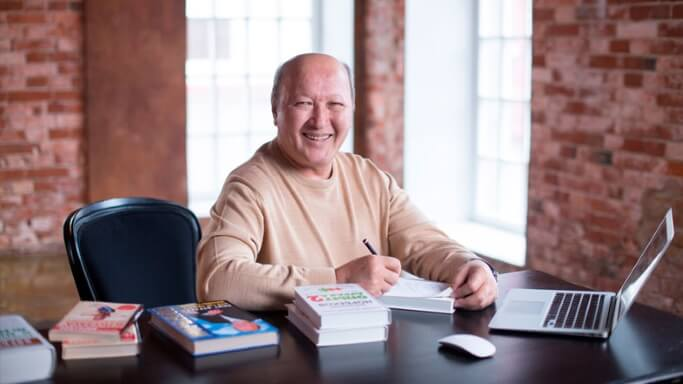
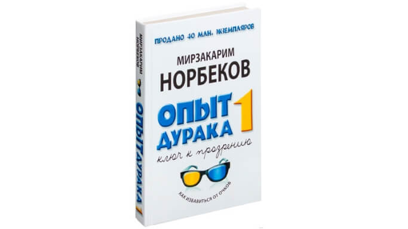
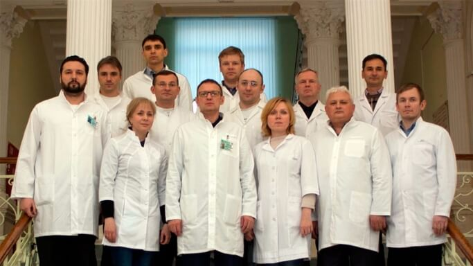

Автор нашумевшей книги "Опыт дурака, или путь к прозрению" и основатель "Института самовосстановления человека" Мирзакарим Норбеков шокировал своим открытием весь научный мир офтальмологии и микрохирургии.
Благодаря его уникальному открытию только за 2020 год десятки тысяч жителей России полностью восстановили себе зрение, а коммерческие клиники продолжают терять клиентов, которые отказываются от дорогостоящих и небезопасных операций.

Мирзакарим Санакулович Норбеков - доктор психологии и педагогики, доктор философии в медицине, профессор, действительный член ряда российских и зарубежных академий, основатель и президент "Института самовосстановления человека", автор нескольких известных книг, которые помогли множеству людей.
Корреспондент: "Мирзакарим Санакулович, здравствуйте! Начну с главного вопроса, это правда что вы нашли способ безоперационного восстановления зрения в домашних условиях?"
Мирзакарим Норбеков: Здравствуйте! Да, это действительно так и я не перестаю получать письма благодарностей от людей, которые навсегда избавились от очков и линз и живут полноценной жизнью.
Корреспондент: "Можете рассказать вашу историю? И что это за способ такой?"
Мирзакарим Норбеков: Все началось еще в далеком 2001 году. Тогда я написал книгу, которая называлась "Опыт дурака, или путь к прозрению". В ней я уделил большое внимание психосоматике человека и каким образом это влияет на зрение. Я считаю, что основной причиной нарушения зрения большинства людей является неправильная работа мышц глаз, возникающая вследствии нервно-психического напряжения.

Если мозг подвергается напряжению, глаза так же начинают смотреть с напряжением и интерпретация изображения на сетчатке нарушается. В результате чего зрение ухудшается. Чтобы вернуть зрение в норму сначала необходимо снять напряжение с психики, а уже потом прибегать к различным формам коррекции. Это очень важная мысль, которую многие не понимают. Все проблемы от нервов, слышали? Вот и со зрением происходит точно так же.
Корреспондент: "Насколько я знаю, эта книга до сих пор пользуется огромным спросом и помогает многим людям"
Мирзакарим Норбеков: Это правда, популярность и эффективность метода была настолько высока, что за 17 лет нам пришлось открыть более 120 консультационных и обучающих центров по всей территории России и СНГ. За эти долгие годы мы помогли огромному количеству людей полностью вернуть или улучшить свое зрение. Но, к сожалению, были и те, которым мы помочь не смогли. По нашим подсчетам за последние 10 лет только 60% людей пришедших к нам получили желаемый результат. У остальных 40% улучшения были либо минимальные, либо их не было со всем.
Корреспондент: "Надо сказать, что 60% людей - это очень хорошая статистика, учитывая тот факт, что восстановление зрения проходило без операционного вмешательства, а только путем гимнастики для зрения и работы с психосоматикой."
Мирзакарим Норбеков: Возможно Вы правы, но что делать остальным 40%? Ложиться "под нож"? Или смириться и жить неполноценно? Ведь именно благодаря нашим органам чувств наша жизнь наполняется красками.
Корреспондент: "И что вы сделали?"
Мирзакарим Норбеков: Все эти годы мы искали универсальный способ, который помогал бы гораздо большему числу людей вернуть себе зрение. Мы заметили, что лучшего результата добиваются те наши пациенты, которые дополнительно используют различные комплексы витаминов, микроэлементов и специальных веществ, влияющих на мозговую активность. Поэтому с 2014 года под руководством Национального медико-хирургического центра им. Н. И. Пирогова мы стали подбирать различные комплексы препаратов и их дозировки с целью найти формулу, максимально воздействующую на естественное восстановление зрения.

(Команда ученых-офтальмологов, задействованных в разработке формулы)Корреспондент: "Получилось?"
Мирзакарим Норбеков: В течение первых 5 лет было клинически протестировано более 820 различных формул действующих веществ и их дозировок. Несомненно результат был, но он оставлял желать лучшего. В конце 2019-ого года наши попытки наконец завершились колоссальным успехом, которого мы не могли себе даже представить.
Один из морозных дней декабря начинался так же как и всегда. Мною совместно с группой ученых была подготовлена очередная комбинация препаратов и дозировок и передана нашей фокус-группе на испытания. Фокус-группа состояла из 12 человек, находившихся у нас на стационарном лечении под наблюдением ученых. Всего через пару дней ко мне в кабинет зашел пациент с ошарашенными глазами и сказал: "Мирзакарим, у меня ведь зрение -6, я раньше даже время на настенных часах в палате не мог различить. Но сегодня со мной что-то не то. Я вижу. Просто вижу. Как будто кто-то подкрутил резкость картинки в моих глазах".
Это был первый звоночек. Через 21 день, по окончанию клинических тестов, мы получили результат, которого даже не ожидали. 12 из 12 пациентов смогли восстановить зрение более чем на 70%.
После чего мы сразу же отправили нашу формулу на более масштабные клинические испытания в России и Израиле. Результат - 94% испытуемых частично или полностью вернули себе зрение. Это стало колоссальным прорывом в безоперационном лечении зрения.
Корреспондент: "94% это и правда колоссальный результат, операции теперь уйдут в прошлое?"
Мирзакарим Норбеков: Я думаю, что операции останутся, но необходимость в них теперь будет гораздо ниже, чем раньше. После успешных клинических испытаний в Израиле сразу 4 крупнейших мировых фармацевтических холдинга предложили выкупить патент на производство препарата по нашей формуле. Но мы им отказали и было принято решение производить и продавать препарат только на территории России и стран СНГ.
Корреспондент: "Но ведь на производство нового препарата требовались огромные инвестиции. Вы нашли их в России?"
Мирзакарим Норбеков: После успеха в Израиле, к нам поступило более 40 инвестиционных предложений от крупных компаний из России. Но нам был нужен надежный и всем известный партнер, поэтому мы приняли предложение от Инновационного центра Сколково, который проинвестировал в разработку препарата 1.7 миллиона долларов. После недолгих совещаний было утверждено название нового Российского препарата для улучшения зрения - Окунорм.

Корреспондент: "Можете прояснить при каких проблемах со зрением стоит использовать Окунорм?"
Мирзакарим Норбеков: Помимо обычного ухудшения зрения в клинических испытаниях участвовали пациенты с такими заболеваниями как:
- близорукость,
- глаукома,
- катаракта,
- воспаление зрительного нерва,
- неврит зрительного нерва,
- увеит,
- хореоретинит,
- отслоение сетчатки,
- помутнение роговицы,
- блефарит,
- конъюктивит,
- пигментный ретинит,
- кератит
Поэтому если у вас есть хоть одно заболевание из этого списка можете смело использовать данный препарат.
Корреспондент: "Я думаю у наших читателей назревает логичный вопрос. Что именно содержится в формуле этого препарата и чем она так уникальна?"
Мирзакарим Норбеков: Препарат не содержит в себе каких-то уникальных действующих веществ. Все дело именно в правильно подобранном комплексе этих веществ и выверенных дозировках. Как показывает медицинская практика - именно это является основополагающим фактором в эффективности безоперационных методов лечения и коррекции зрения.
Важным фактором является то, что препарат получился абсолютно натуральным, поэтому практически не имеет побочных действий и может применяться без назначения врача. Другими словами, вы можете восстановить зрение самостоятельно в домашних условиях.
В состав Окунорм входят:
- Экстракт скандинавской черники с повышенным содержанием антоцианов. Усиливает остроту зрения, укрепляет сетчатку глаз.
- Лютеин и Зеаксантин высшей категории. Защищают сетчатку от фотоповреждения, обеспечивают остроту зрения, предупреждают возрастное снижение зрения, снижают риск развития макулярной дегенерации, помогают в профилактике катаракты.
- Экстракт Гинкго Билоба. Улучшает микроциркуляцию, предотвращает хрупкость капилляров, улучшает кровоток в сосудах сетчатки глаза.
- Экстракт коры сосны. Источник проантоцианидинов, мощных антиоксидантов. Улучшает эластичность сосудов, остроту зрения и контрастность восприятия изображения, способствует нормализации внутриглазного давления, профилактике и замедлению прогрессирования глаукомы.
- Витамины B, C, E, в том числе пиридоксин Улучшают состояние органов зрения, участвуют в процессах темновой адаптации, снижают усталость глаз, ускоряют восстановление зрительных пигментов, способствуют предотвращению катаракты.
Корреспондент: "Этот препарат уже производится? И сколько он будет стоить?"
Мирзакарим Норбеков: Первая партия Окунорм в количестве 120 000 упаковок была произведена в конце января 2020 года. Эта партия была разослана клиникам и офтальмологическим центрам России для рекомендации. Мы хотели еще раз убедиться в эффективности нашей формулы. Буквально за пару месяцев мы получили десятки тысяч благодарностей со всей страны. Люди продолжают успешно восстанавливать зрение препаратом Окунорм и мы безмерно этому рады.
Получив столько восторженных отзывов и воодушевившись результатами мы решили провести еще одну акцию, но теперь уже через интернет, чтобы больше людей смогло опробовать Окунорм на себе.
В период с 01.07.2020 г. по 28.07.2020 г. препарат Окунорм может купить любой житель страны всего за 149. Реализация препарата осуществлена по средствам заказа на нашем официальном сайте. По окончанию акции цена на препарат будет составлять 1980 рублей, это будет минимальная розничная цена для продажи препарата аптеками и офтальмологическими центрами. Окончательная стоимость была утверждена всеми инстанциями и выше 1980 рублей подниматься не будет. В аптеки страны препарат Окунорм поступит весной 2021 года.
Корреспондент: "Мирзакарим, спасибо Вам за интересное и главное полезное интервью. Хотите сказать что-то на прощание?"
Мирзакарим Норбеков: Я скажу только одно. Ваше главное оружие - это ваша вера. Вера в себя, в успех, в лучшее будущее. Мы верили, что у нас все получится и у нас получилось. Поэтому восстанавливайте свое зрение, живите полной жизнью, верьте в себя и у вас тоже все получится. Как говорил великий философ, чудо уже здесь, только откройте для него свое сердце. Успехов!
Внимание! Акция для {sub_id_3}-летних жителей . Вы можете забронировать Окунорм за сегодня до включительно!

Остерегайтесь подделок! Мы публикуем единственный официальный сайт поставщика Окунорма в России.
Понравилась статья? Поделитесь с друзьями!

Петр
11 июля
Спасибо. Выписал Окунорм за 149. Попробую полечиться, зрение с годами падает все больше, операцию делать боюсь. Сосед сделал, уже 2 года мучается. Все там гноится и не заживает
Анна Филатова
11 июля
Полностью подтверждаю. Окунорм невероятные капсулы. Пробовала им восстанавливать зрение. В последнее время перестала видеть даже дорожные знаки. Стала пить капсулы по совету знакомого, и все стало нормально. Острота зрения вернулась. Советую всем! Кстати купила всего за 149.

Вероника
11 июля
Спасибо за статью. Интересно. Если такая замечательная акция, почему бы не попробовать. Про Норбекова знаю очень давно, много знакомых по его книжке улучшили себе зрение.
Константин
11 июля
Как раз сейчас восстанавливаю зрение этим препаратом. Пошла вторая неделя всего, а зрение заметно острее стало. Если раньше с окна 5ого этажа не мог рассмотреть номер маршрутки внизу, то сейчас его вижу.
Виктор
11 июля
Тоже есть опыт знакомства с этими капсулами и тоже положительный. Восстановил зрение с минус 5 до минус 1,5. Пил всего месяц.
Ольга Г.
11 июля
Много слышала об окунорме хорошего от тех кто пользовался им с беплатной партии, но я тогда не успела получить. Спасибо что сделали еще одну акцию, теперь наконец успела заказать.
Людмила
11 июля
Знакомая делала операцию на глаза в прошлом году. Два раза (была повторная). Результата вообще не получила, а на правом глазу еще хуже зрение стало! Врачи разводят руками и говорят тчо никаких гаранти не давали. Вот и ложись потом под нож действительно.
Станислав Ерский
11 июля
Приятно удивлен действием капсул. Купида тоже за 149 из первой партии, но честно говоря, все равно не особо верил. Думал что за 149 я уж точно ничего стоящего не получу. Но за 1,5 недели зрение выправил с -3.5 до -2.5. Начало появляться кратковременное полное восстановление зрения (несколько секунд). Продолжаю лечиться. Попросту очень крутое лекарство.
Михаил Любимов
11 июля
Наши ученые всегда были и будут самыми сильными, потому что у нас хорошая школа. А Норбеков это вообще чудо-человек без преувеличения, столько сделал для здоровья людей что не пересчитать, очень его уважаю.
Эльвира
11 июля
Сегодня забрала посылку с почты. Все хорошо. Доставили быстро. И удивительно, но правда за 149 как оказалось. Спасибо за такую акцию. Начали профилактику всей семьей.

Марина Уткина
11 июля
Думала уже коррекцию зрения делать, но очень боялась. Месяца 2 назад узнала про Окунорм. Решила его попить для начала – зрение улучшилось, теперь не буду делать операцию
Павел К.
11 июля
Спасибо за рекомендации. Я уже видел этот препарат в одной аптеке, и продавали его за 4000 рублей!! Видимо выкупили по дешевке или за 149 взяли и в три дорога толкают, сволочи
Владимир
11 июля
Привет всем! Месяц назад пропил курс Окунорма, и зрение стало 1!!! У меня просто нет слов. Большое спасибо!
Жанна
11 июля
Мне вообще окунорм посоветовал знакомый окулист, сказал лучше ничего нет даже в хваленой Америке. Пью уже вторую неделю, стала видеть как буд-то какая-то пелена с глаз спала. Такое чудесное чувство, словами не передать.

Артем З.
11 июля
Я пью Окунорм для снижения усталости глаз. Много работаю за компом. Хорошо помогает.
Иван Василенко
11 июля
Спасибо! Для нас пенсионеров делать операцию очень дорого. Хорошо, что есть добрые люди, которые продают за 149.
Елена Жаворуева
11 июля
Скажу честно, восстановить зрение гимнастикой это тоже самое что пытаться увеличить сиськи, просто протирая их. Слышала что результаты у людей есть, но верю в это слабо. А вот препаратом вполне себе можно, почитала состав Окунорма и очень впечатлилась, думаю не взять за 149 и не пробовать просто грех будет.
Мария
11 июля
Спасибо!!!
Внимание! Акция для {sub_id_3}-летних жителей . Вы можете забронировать Окунорм за сегодня до включительно!

Остерегайтесь подделок! Мы публикуем единственный официальный сайт поставщика Окунорма в России.

Комментарии